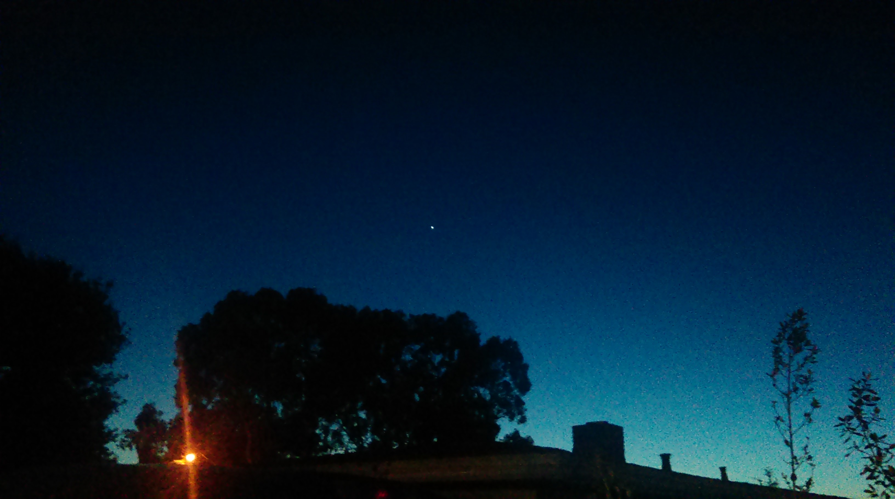

Lab 8 CSS Selectors

Purpose:
The purpose of Lab 8 is to be able to understand how work with CSS selectors and to know when and how to use id and class attributes. We are also expected to know how to organize and style our page.
Challenges:
The challenges that we faced while working on this lab were trying to organize and see which elements had classes and how to style them without overriding other classes and ids. We had a bit of trouble with the .image class attribute as it was interfering with another tag but we were eventually able to fix it.
Results:
Results of Lab 8 are displayed